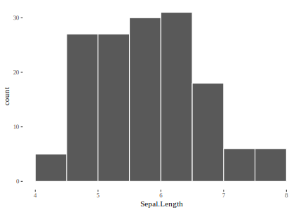
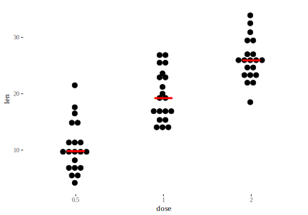
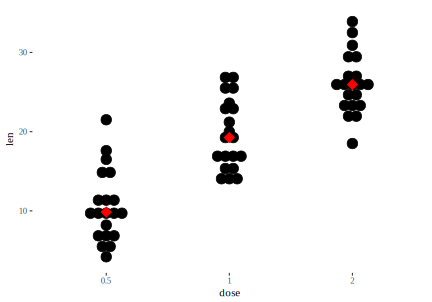
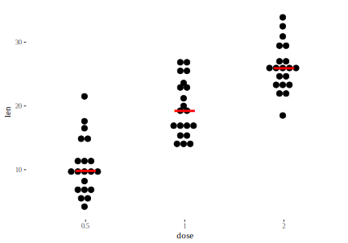
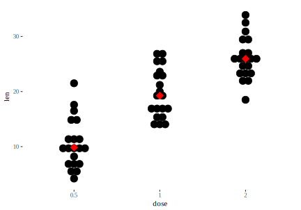
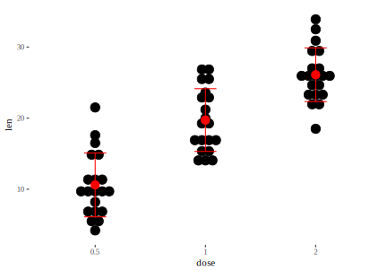
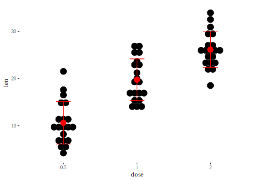

12 Erinevad ggplot geom_-id
12.1 Kui iga muutja kohta on üks andmepunkt
Siis kasuta cleveland graafikut. See on parem kui barplot.
dd <- diamonds %>% group_by(clarity) %>% summarise(number_of_diamonds=n())
dd %>% ggplot(aes(x=number_of_diamonds,
y=reorder(clarity, number_of_diamonds))) +
geom_point(size=3) +
theme_bw() +
theme(panel.grid.major.x = element_blank(),
panel.grid.minor.x = element_blank(),
panel.grid.major.y = element_line(colour="grey60", linetype="dashed")) +
labs(y="clarity")
12.2 Tulpdiagrammid mõõdavad counte ja proportsioone
str(diamonds)
#> Classes 'tbl_df', 'tbl' and 'data.frame': 53940 obs. of 10 variables:
#> $ carat : num 0.23 0.21 0.23 0.29 0.31 0.24 0.24 0.26 0.22 0.23 ...
#> $ cut : Ord.factor w/ 5 levels "Fair"<"Good"<..: 5 4 2 4 2 3 3 3 1 3 ...
#> $ color : Ord.factor w/ 7 levels "D"<"E"<"F"<"G"<..: 2 2 2 6 7 7 6 5 2 5 ...
#> $ clarity: Ord.factor w/ 8 levels "I1"<"SI2"<"SI1"<..: 2 3 5 4 2 6 7 3 4 5 ...
#> $ depth : num 61.5 59.8 56.9 62.4 63.3 62.8 62.3 61.9 65.1 59.4 ...
#> $ table : num 55 61 65 58 58 57 57 55 61 61 ...
#> $ price : int 326 326 327 334 335 336 336 337 337 338 ...
#> $ x : num 3.95 3.89 4.05 4.2 4.34 3.94 3.95 4.07 3.87 4 ...
#> $ y : num 3.98 3.84 4.07 4.23 4.35 3.96 3.98 4.11 3.78 4.05 ...
#> $ z : num 2.43 2.31 2.31 2.63 2.75 2.48 2.47 2.53 2.49 2.39 ...loeb üles, mitu korda esineb iga cut
ggplot(diamonds) +
geom_bar(aes(x = cut, fill = cut)) +
theme(legend.position="none")
Pane tähele, et y-teljel on arv, mitu korda esineb tabelis iga cut. See arv ei ole tabelis muutuja. geom_bar, geom_hist, geom_dens arvutavad plotile uued y väärtused — nad jagavad andmed binidesse ja loevad üles, mitu andmepunkti sattus igasse bini.
Kui tahad tulpdiagrammi proportsioonidest, mitu korda eineb tabelis igat cut-i, siis tee nii:
ggplot(diamonds) +
geom_bar(aes(x = cut, y = ..prop.., group = 1))Pane tähele et tulpade omavahelised suhted jäid samaks. Muutus ainult y-telje tähistus.
Edasi lisame eelnevale veel ühe muutuja: clarity. Nii saame üles lugeda kõigi cut-i ja clarity kombinatsioonide esinemise arvu või sageduse. Erinvate clarity tasemete esinemiste arv samal cut-i tasemel on siin üksteise otsa kuhjatud, mis tähendab, et tulpade kõrgus ei muutu võrreldes eelnevaga.
ggplot(diamonds) +
geom_bar(aes(x = cut, fill = clarity))
Kui me tahame, et cut-i ja clarity kombinatsioonid oleks kastidena ükteise sees, pigem kui üksteise otsa kuhjatud, siis kasutame position = “identity” argumenti.
ggplot(diamonds, aes(x = cut, fill = clarity)) +
geom_bar(alpha = 0.7, position = "identity") 
ka see graafik pole väga lihtne lugeda. Parem viime clarity klassid üksteise kõrvale
ggplot(data = diamonds, aes(x = cut, fill = clarity)) +
geom_bar(position = "dodge")
Eelnev on hea viis kuidas võrrelda clarity tasemete esinemis-sagedusi ühe cut-i taseme piires.
Ja lõpuks, position=“fill” normaliseerib tulbad, mis muudab selle, mis toimub iga cut-i sees, hästi võrreldavaks. See on hea viis, kuidas võrrelda clarity tasemete proportsioone erinevate cut-i tasemete vahel.
ggplot(data = diamonds, aes(x = cut, fill = clarity)) +
geom_bar(position = "fill")
Ja lõpuks, kui te tahate teha midagi, mis on enamasti keskmiselt rumal valik, ehk plottida tulpdiagrammi viisil, et tulba kõrgus vastaks tabeli ühes lahtris olevale numbrile, mitte faktortunnuse esinemiste arvule tabelis, siis kasutage: geom_bar(stat = "identity")
df <- tibble(a=c(2.3, 4, 5.2), b=c("A", "B", "C"))
ggplot(df, aes(b, a)) + geom_bar(stat = "identity")
12.3 Andmepunktid on ükshaaval välja plotitud
Kõigepealt dotplot, mis ei pane andmepunkti y skaalal täpselt õigesse kohta vaid tekitab histogrammilaadsed andmebinnid, kus siiski iga punkt on eraldi näidatud. See lihtsustab veidi “kirjude” kompleksete andemsettide esitust.
ToothGrowth <- ToothGrowth
ToothGrowth$dose <- as.factor(ToothGrowth$dose)
p<-ggplot(ToothGrowth, aes(x=dose, y=len)) +
geom_dotplot(binaxis='y', stackdir='center')
p
# Change dotsize and stack ratio, add line or dot for median
ggplot(ToothGrowth, aes(x=dose, y=len)) +
geom_dotplot(binaxis='y', stackdir='center',
stackratio=1.5, dotsize=0.7)+
stat_summary(fun.y = median, geom = "point", shape = 95,
color = "red", size = 15) +
theme_tufte()
p + stat_summary(fun.y=median, geom="point", shape=18,
size=5, color="red")
#add mean and SD, use pointrange
p + stat_summary(fun.data=mean_sdl, fun.args = list(mult=1),
geom="pointrange", color="red")
#use errorbars
p + stat_summary(fun.data=mean_sdl, fun.args = list(mult=1),
geom="errorbar", color="red", width=0.2) +
stat_summary(fun.y=mean, geom="point", size=3, color="red") 
 

Sama jitterplotina — nüüd on iga punkt y suhtes õiges kohas, aga joonis ei näe enam liiga puhas välja.
ggplot(ToothGrowth, aes(x=dose, y=len)) +
geom_jitter(width = 0.05)+
stat_summary(fun.y = median, geom = "point", shape = 95,
color = "red", size = 15, alpha=0.6) +
theme_tufte()
# Change dot plot colors by groups
p<-ggplot(ToothGrowth, aes(x=dose, y=len, fill=dose)) +
geom_dotplot(binaxis='y', stackdir='center')
p
It is also possible to change manually dot plot colors using the functions :
scale_fill_manual() : to use custom colors
scale_fill_brewer() : to use color palettes from RColorBrewer package
scale_fill_grey() : to use grey color palettes
#Choose which items to display :
p + scale_x_discrete(limits=c("0.5", "2"))
#> Warning: Removed 20 rows containing non-finite values
#> (stat_bindot).
Dotplot kui histogram:
ggplot(iris, aes(Sepal.Length)) + geom_dotplot()
Histogram:
ggplot(iris, aes(Sepal.Length)) +
geom_histogram(bins = 10, color="white", fill = "navyblue") 
library(ggthemes)
d <- iris # Full data set
d_bg <- d[, -5] # Background Data - full without the 5th column (Species)
ggplot(data = d, aes(x = Sepal.Width, fill = Species)) +
geom_histogram(data = d_bg, fill = "grey", alpha=0.8, bins=10) +
geom_histogram(colour = "black", bins=10) +
facet_grid(Species~.) +
guides(fill = FALSE) + # to remove the legend
theme_tufte() # for clean look overall
density plot:
iris%>%ggplot()+
geom_density(aes(Sepal.Width, fill=Species, color=Species, alpha=0.5))+
theme_tufte()
joyplot võimaldab kõrvuti panna isegi sadu density plotte
library(ggjoy)
ggplot(iris, aes(x=Sepal.Length, y=Species, fill=Species)) +
geom_joy(scale=4, rel_min_height=0.01, alpha=0.9) +
theme_joy(font_size = 13, grid=TRUE) +
theme(legend.position = "none")
Joyplot, kui meil on väga palju kõrvuti tihedusjaotusi võrrelda
sch <- read.csv("data/schools.csv")
sch$school <- as.factor(sch$school)
ggplot(sch, aes(score1, y=reorder(school, score1))) +
geom_joy() + theme_tufte()
Boxplot:
ggplot(iris, aes(Species, Sepal.Width, fill = Species)) +
geom_boxplot()
violin plot plus jitterplot:
ggplot(iris, aes(Species, Sepal.Width)) +
geom_violin(aes(fill = Species)) +
geom_jitter(width = 0.1, alpha = 0.4, size = 0.5)
12.4 Kahe muutuja koos-varieeruvus
X-teljel on geisri Old Faithful pursete tugevus ja y-teljel pursete vaheline aeg. Kui kahe purske vahel kulub rohkem aega, siis on oodata tugevamat purset. Tundub, et see süsteem töötab kahes diskreetses reziimis.
m <- ggplot(faithful, aes(x = eruptions, y = waiting)) +
geom_point() +
xlim(0.5, 6) +
ylim(40, 110)
#m + stat_density_2d(aes(fill = ..level..), geom = "polygon")
m + geom_density_2d()
Kui punkte on liiga palju, et välja trükkida, kasuta geom = “polygon” varianti.